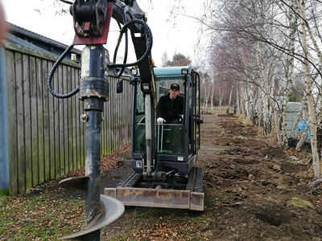

<div class="pages">
  <div data-page="568-nyt-hegn-bag-den-gra-hal" class="page navbar-fixed toolbar-fixed" >
    <div class="navbar">
      <div class="navbar-inner">
        <div class="left">
          <a href="#" class="link back icon-only"><i class="icon icon-back"></i></a>
          <!-- <a href="#" class="back link icon-only"><i class="icon icon-back"></i></a> -->
        </div>
        <div class="center">Nyt hegn bag "Den Grå Hal"</div>
        <!-- <div class="right"></div> -->
        <div class="right">
        </div>
      </div>
    </div>
    <div class="page-content" style="padding-top:45px;">
       <div class="content-block">
          <p><b>Nyt hegn bag "Den Grå Hal"</b></p>
          <center></center>
          <center></center>
          <p>Hegnet ind mod naboen reetableres. I lokalplanen er det bestemt, at der skal være et støjhegn ind mod naboen og det gamle væltede for mere end et år siden.
          <br /><br />
          Nu er tiden kommet til at sætte et nyt op, og som det fremgår af billederne, så skal der kraftigt grej til at grave huller til stolperne i den stenede jord.
          <br /><br /> 
          Igen er det greenkeeperne der holder for med byggeriet.</p>
        </div>
    </div>
    </div>
    </div>
  </div>
</div>
